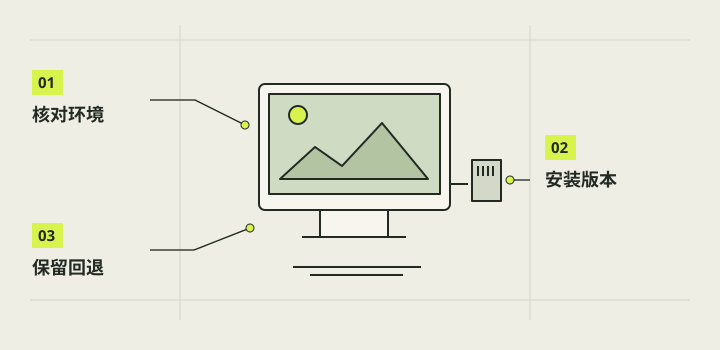

软件设计与安装调试
电脑开发与树莓派运行相机是两套环境。Junshu 已建立公开仓库 https://github.com/Junshu111/junshu-camera，但教程和可复现的公开软件发行包尚未上传，全新电脑与新镜像的一键安装未验证。本章先教你核对仓库状态、系统和官方相机工具；Junshu 安装步骤要等匹配发行包与说明上线。

本章完成目标
- 分清电脑端开发与树莓派端运行
- 依据正式文档核对依赖与适配条件
- 保留安装、自检、失败与回退记录
开始前准备好
- 已理解前面章节的系统、连接与拍照流程
- 准备电脑和独立项目文件夹
- 知道正式仓库地址；执行 Junshu 应用安装还须等待匹配发行包和安装说明
- 依赖
- 程序开发或运行所需的其他软件和版本。
- 开发环境
- 电脑上阅读、修改和检查源码的工作空间。
- 运行环境
- 相机应用调用树莓派真实摄像头、显示和系统接口的条件。
核对已建立的仓库
正式仓库地址是 https://github.com/Junshu111/junshu-camera。先确认页面是否已经放出 README、许可、版本说明、源码和发行包；仓库已建立不等于这些文件都可下载。当前教程和可复现公开安装包尚未上传，可先收藏地址并记录查看日期，不把旧聊天的本机绝对路径或内部归档当成公开下载入口。
在电脑端先做文档核对
待仓库上传源码和说明后，用 AI 编程助手打开项目文件夹，让它先读 README、AGENTS.md（若有）及环境文档，识别你的操作系统、依赖和适用版本。要求在独立项目环境中工作，安装前列出拟执行步骤。当前网页样稿可以在电脑预览，但不能代替真实树莓派摄像头、GPIO 和开机服务。
核对树莓派适配
在实际树莓派上查系统版本、架构、桌面会话、相机识别和所需 Python 库，再与正式发行说明比较。官方说明较新的 Raspberry Pi OS 常含 Picamera2，但 Lite 与桌面版的图形依赖不同；不能把现有 Pi 3B+ 上的 Debian、Wayland、PyQt5 组合默认为新卡已具备。工具缺失时先按该镜像官方说明处理，不直接套用旧系统命令。
cat /etc/os-release
rpicam-hello --list-cameras注意 / 不因旧脚本而重装正常系统或盲改自启动。
仅按匹配的发布说明安装
在公开发行包与适配说明上传前，不运行现有 C 软件目录中的 Mac 内部安装器。先用已匹配镜像的官方 rpicam 工具完成第08章预览和 JPG 基线。将来发布后再核对发行包校验值、版本、备份与回退说明，按适用环境安装；当前 New Cam 1.0.0 入口只适用于已知设备，不是通用新卡安装器。
注意 / 涉及启动配置时保留原状态与报告，不强制覆盖未知变更。
把调试分三层记录
第一层记电脑端语法或测试，第二层记 Pi 上的包和依赖，第三层在正常开机后记真实屏幕、取景、拍照和退出。每层写明时间、版本、操作位置、通过项和失败原文；启动失败时优先用该版受控回退入口，不删除旧目录或照片。未验证项继续留给实机验收。
完成后，逐项打勾。
勾选帮助你记录进度，不代表项目替你完成了实机验收。
遇到问题，从这里排查。
电脑网页能打开，Pi 应用不能运行
网页只证明前端可读；先用官方相机工具核对 Pi 系统与摄像头，再等匹配发行包核对 Qt 和应用要求。
包已导入，但开机仍是旧版
分开查导入、启用和重启观察报告；使用受控核查与回退入口。
本项目的实际进展
- 2026-10-29 1.0.0 实机安装因 session-enable 权限失败并回退；00:50:57 修复实机报告为 staged，仍缺开机效果。内部包未公开上传。
- 1.0.0 本地测试 289 项中 288 通过、1 项 Linux 检查跳过，不保证新镜像适配。
资料与核对依据
- New Cam 1.0 安装说明 · camera-project/C-软件/交付/20261029-NewCam1.0/安装说明.md
- 实机修复安装报告 · camera-project/C-软件/qa/newcam-1.0/device-reports/20261029-005057-v1-repair-install-summary-c43f833093b74b8883b4a79df80f5062.json
- 本地测试汇总 · camera-project/C-软件/qa/newcam-1.0-20261028/verification.json
- 树莓派官方 Picamera2 说明 ↗
- Junshu 公开仓库地址（由用户提供；内容上传状态按本轮交接） ↗
资料核对日期：2026-10-30。不同硬件、系统版本和材料需要重新验证。